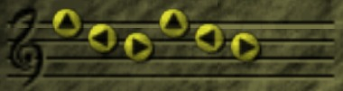
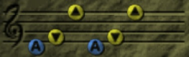

Zelda's Lullaby

Essa canção você conseguirá ao terminar sua conversa com a Zelda no castelo de Hyrule.
Saria's Song

Saria te ensina esta canção quando você chegar ao final do labirinto de Lost Woods e passar pelos Mad Scrub's você encontrará Saria sentada em um toco de arvore fale com ela, depois da conversa ela lhe ensinará a canção e falará que se não souber onde ir pode toca-la e também pedindo para visita-la novamente.
Epona's Song
Quando entrar no Lon Lon Ranch no centro do circuito de cavalos haverá uma garotinha, Malon, ao conversar com ela lhe dira que sua mãe cantava essa canção a ela, mostre sua ocarina e ela lhe ensinará a musica.
Sun's Song
No Cemiterio, em Kakarico Village, terá a tumba dos Royal Family's, toque a canção que Zelda lhe ensinou em cima do simbolo da TreeForce no chão e logo um raio acertará a lápide, caia no buraco que surgir a sua frente, atravesse todas as câmaras lá dentro e no final vocÊ encontrará um paredão com uma escrita nele, lá tera a canção.Retorne todas as câmaras e saia pelo mesmo lugar onde entrou.
Song of Time
Quando terminar de coletar todas as Spiritual Stones, você deverá retornar ao castelo, quando chegar ocorrerá uma pequena cutscene onde Zelda e Impa estarão fugindo de Ganondorf. Quando a cena acabar caia no rio embaixo da ponte do castelo e pegue a Ocarina of Time, assim que pegar outra cutscene acontecerá e Zelda lhe ensinará a canção.
Song of Storms
Depois de se tornar adulto vá ao moinho no Kakarico Village, fale com o musico, ele falará que um jovem tocou aquela música a muito tempo atras e o moinho ficou estranho, ele lhe ensinará a música.
Minuet of Forest
Ao chegar no final do labirinto de Lost Woods, entrar em Sacred Forest Meadow, enfrentar os moblins, você chegará no mesmo lugar onde encontrou Saria, após sua lembrança Sheik irá aparecer e lhe ensinar a canção.
Bolero of Fire

Ao entrar dentro da Cratera da Montanha da Morte, quando estiver indo para a entrada do Templo de fogo, Sheik o parará novamente e lhe ensinará a canção para este Templo.
Serenade of Water
Em Lake Hylia, ao sul de Hyrule, atravesse todas as pontes proximo ao laboratorio para chegar na ilha do meio, Sheik aparecerá e ensinará a canção.
Requiem of Spirits
Ao passar pelo Gerudo's Fortress, ao leste de Hyrule, entre no deserto e siga as bandeiras até chegar em um pequeno forte no meio do deserto, lá use a Lupa para ver uma bruxa que o guiará o restante do caminho para o Templo dos Espiritos, quando se aproximar da entrada do Templo Sheik aparecerá e lhe ensinará a canção.
Nocturne of Shadow
Quando for Kakarico adulto, depois de completar o Templo da Agua, uma cutscene começará, Sheik tenta aprisionar as sombras novamente dentro do poço enquanto Impa tenta deter Bomgo Bomgo em seu Templo, apos ele ser lançado para longe seu personagem tentará proteger o amigo mas acaba sendo acertado em cheio. Quando sua conciência retorna Sheik está lhe esperando para ver se está tudo bem, após uma conversa ele lhe ensinará a canção que o levará para o Temple of Shadow ou Templo dos Espiritos.
Prelude of Light
Ao retornar para o Temple of Time ou Templo do Tempo após recolher o primeiro medalhão, que Saria o entrega quando termina o Temple of Forest, Sheik lhe ensinará a musica para retornar a aquele templo e também deixará com que você coloque a Master Sword no pedestal para retornar ao passado.